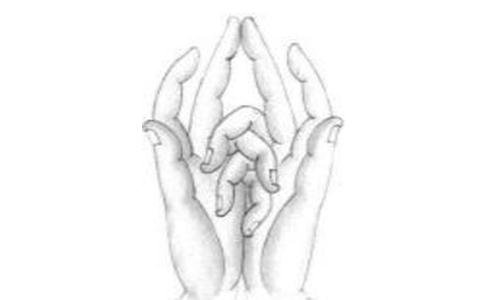

南谟本师
一、忏悔（三遍）
往昔所造诸恶业。皆由无始贪嗔痴。
从身语意之所生。今对佛前求忏悔。
往昔所造诸恶业。皆由无始贪嗔痴。
从身语意之所生。一切罪障皆忏悔。
往昔所造诸恶业。皆由无始贪嗔痴。
从身语意之所生。一切罪根皆忏悔。
二、皈依（三遍）
南无七俱胝佛母大圣
南无准提海会佛菩萨
南无准提海会
三、七俱胝启请
稽首皈依苏悉帝。头面顶礼七俱胝。
恒沙佛母大准提。愿放毫光摄念我。
我今誓愿求成佛。专心念此准提王。
梵王帝释及诸天。八部龙神愿加护。
若有毫厘合圣意。普施一切诸有情。
慈悲布施生
道场清净不思议。天魔地魔依咒敕。
五部金刚四天王。共结总持三昧界。
四、结准提印，持咒（108遍）
南无飒哆喃 三藐三菩驮 俱胝（zhi）喃 怛（da）致他（tuo）
唵（ong） 折戾（li） 主戾 准提 娑婆诃
五、回向
我今持诵大准提，即发菩提广大愿。
愿我定慧速圆明，愿我功德皆成就。
愿我胜福遍庄严，愿共众生成佛道。
愿我临欲命终时，尽除一切诸障碍。
面见彼佛阿弥陀，即得往生安乐刹。
（个人有何求愿皆可一同回向）
准提法修持仪轨简要【生起次第】
预备：
1、手结定印。
2、金刚跏趺（右腿放在左腿上而坐）。
3、调呼吸至身心宁静。
4、观想头顶上约二寸高有梵文“LA”字，大约直径一寸，放白色光，光明遍照自己全身，乃至遍法界。
一、净法界咒：嗡蓝（音嗡那）
1、左手持
2、念净法界咒二十一遍，每七遍后加念“娑诃”一遍。
二、护身咒：嗡齿临（音嗡逞）
1、右手结金刚拳印。
2、念护身咒二十一遍，每七遍后加念“娑诃”一遍，念毕，即用金刚拳印印额、左肩、右肩、心、喉五处，每印一处，即念“吽”一声。
3、此身即转成金刚密身，诸魔不得其便。右拳散于顶上。
三、六宇大明咒：嗡嘛呢叭弥吽
1、双手结莲花手印，或左手结金刚拳印，置于左膝上。
2、观想四臂观音，口念
3、
4、观想虚空与我无二之中，十方起大风轮，风融于火，火融于水，水融于金刚地，地上涌起八叶巨莲，放射七彩光明。
5、莲蓬座中，生起我身，顶上放光，迎请本师毗卢遮那佛，刹那顷，本师现丈六金身，无量相好，随即更观想自身奉上
6、又观想传法上师现前，
四、
南无飒哆喃，三藐三菩驮，俱胝喃．但侄他，嗡，折隶、主隶、准提、娑婆诃（音所哈）
五、一字大轮咒：嗡部林
1、两手结准提印当胸。
2、观想前面一座镜坛。
3、观想准提本尊于镜坛中显现双跏趺坐，左右共十八只手，头戴五佛冠，三眼，面如满月
4、当本尊现出时，可念上师降魔咒“嗡哈哩底噶”三遍，以察其真伪，真则现更清楚，伪则随即隐没。
5、刹那顷，本尊由自眉间光浑入我身，我身立刻转成本尊，本尊与我身无二无别。
6、观想自身如透明琉璃体，毫无杂垢，内空心中，生起八叶莲花，红色无根。莲花上现一满月轮，轮上现字轮。观想由嗡字起，从前右旋，次第周布轮缘，终而复始，字字光明璀璨，字轮不可观想太大，愈小愈好。如此依法修持，念满九十万遍准提咒（全文），感应道交，则为生起次第渐渐完成。（正持诵未满座时，若须谈话，于自舌上，想一梵文“LA”字，纵使谈话，不成间断。）
【圆满次第】
每次念毕后（遍数自定，愈多愈好），准提印散于（头）顶上，改结定印，而入圆满次第，即想字轮收摄入于中间嗡字，嗡字收摄入于月轮，月轮收摄入于光明点（明点如
观想佛母准提像，有无量光明相好，一一现前。
1、念三遍：
南（ná） 无（mó） 观 世 音 菩 萨
2、念六字大明咒（百遍）：
嗡（ong） 嘛（ma） 呢（ni） 叭（bei） 咪（mei） 吽（hong）
3、念准提咒念（三遍）：
南（ná） 无（mó） 七（qī） 俱（jù） 胝（zhī）佛母大准提菩萨摩诃萨！
4、念皈依文（一遍）：
稽（qǐ） 首（shǒu） 皈（guī） 依（yī） 苏（sū） 悉（xī） 帝（dì），
头（tóu） 面（mian） 顶（dǐng） 礼（lǐ） 七（qī） 俱（jù） 胝（zhī），
我（wǒ） 今（jīn） 称（chēng） 赞（zàn） 大（dà） 准（zhǔn）提（tí），
唯（wéi）愿（yuàn）慈（cí）悲（bēi） 垂（chuí）加（jiā）护（hù）。
5、念准提咒（重复百遍等）：
南（ná） 无（mó） 飒哆喃（sàduō nán）。
三藐三菩陀（sān miǎosān pútuó）。
俱胝喃（jù zhī nán）。怛（dá） 侄（zhí） 他（tuo）。
唵（ong）。折戾主戾（zhélìzhǔlì）。
准提娑婆诃（zhǔntísuōpóhē）。
6、最后念回向文（一遍）
愿消三障诸烦恼，愿得智慧真明了，
普愿罪障悉消除，世世常行菩萨道。
简捷版准提咒修持仪轨（准提法修持简要仪轨）供奉准提菩萨像
南无阿弥陀佛（三称三拜）
南无佛母准提王菩萨（三称三拜）
净法界咒：嗡蓝（21遍）
护身咒：嗡齿林（音嗡逞）（21遍）
观想种子字：清净坛场：
观想头项上约二寸高有梵文【上图所示】宇，大约直径一寸，放白色光，光明 遍照自己全身，乃至遍法界。
六字大明咒：（21-108遍）结金刚拳手印
唵（ōng）嘛（má）呢（ní）叭（bei）咪（men）吽（hōng）
偈颂：结准提咒手印
稽首皈依苏悉帝 头面顶礼七俱胝
我今称赞大准提 唯愿慈悲垂加护
准提咒：结准提印
南 无 飒 哆 喃 三 藐 三 菩 陀
na mo sa duo nan san miao san pu tuo
俱 胝 喃 怛 侄 他
ju zhi nan da zhi tuo
唵 折 隶 主 隶 准 提 娑婆诃
weng zheli zhu li zhunti suo ha
音（梭哈）
（最少108遍每天越多越好，心诚则灵）（结准提印，持多遍）
（散手印之前，手印举过头顶15遍准提咒再散手印）
准提咒心：（结准提印，持百千遍）
唵 折 隶 主 隶 准 提 （可根据自己所求意愿发愿）
weng zheli zhu li zhun ti
娑 婆 诃
suo ha
音（梭哈）
(平时走行坐卧可以随时念：准提咒及咒心）
南师：“南无飒多呐，三藐三菩陀，俱胝呐，达扎陀，唵，折隶，主隶，准提”－－念到这里你发愿：“菩萨，我希望你加持我做什么。”最后一句“梭哈”。懂了吧？发愿在这个地方。就是说后面是咒心。“南无飒多呐，三藐三菩陀，俱胝呐，达扎陀”那是皈依词。准提咒的咒心是“唵，折隶，主隶，准提，梭哈”，那么你要发愿，念到哪里发愿呢：“唵，折隶，主隶，准提－－这里停一下，你发愿，梭哈。”
准提咒手印图：
结手印的方法：
第一步

第二步
成印正视图
成印反视图
（说明：两手无名指并小指 相叉于内。两中指直竖相住，两头指屈附中指第二节，两大拇指并捻右手无名指中节）
一字大轮咒：持21遍
唵 部林
往生咒：（拔一切业障根本得生净土陀罗尼）（结弥陀印或合十持7遍）：
南无阿弥多婆夜 哆他伽多夜 哆地夜他 阿弥利都婆毗 阿弥利哆悉耽婆毗 阿弥唎哆毗迦兰帝 阿弥唎哆毗迦兰多 伽弥腻 伽伽那 枳多迦利 娑婆诃
准提赞：
准提功德聚 寂静心常诵 一切诸大难 无能侵是人
天上及
南无阿弥陀佛（百千声）
回向：
愿此功德；至诚回向历代宗亲、障碍我的冤亲债主、有意无意伤害的生
灵……
愿此功德，普及于一切，我等与众生，皆共成佛道
唵 嘟噜嘟噜 查呀木克 嘿 娑诃